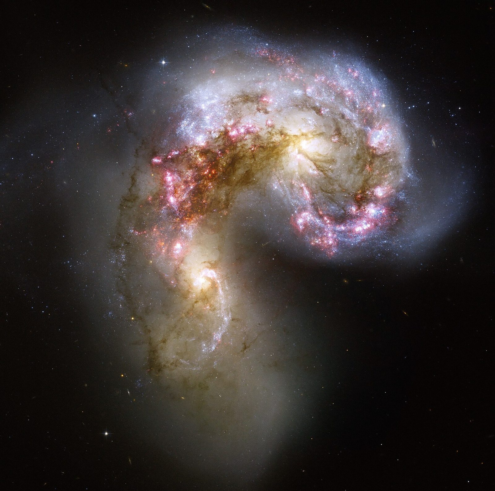
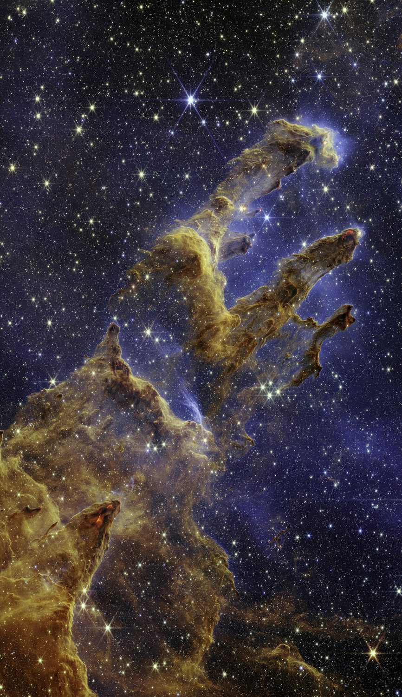
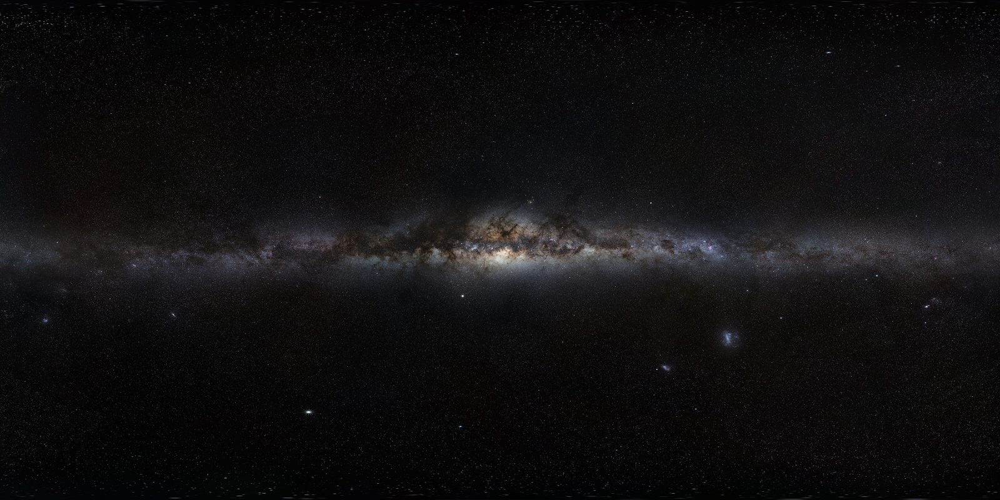

How we know: the collision we're already falling into, the oldest light in existence, the drift of a thousand galaxies — and the fifth of the sky we cannot search.
Chapter 03 ended with a promise: every pair of galaxies is running the gravity-versus-expansion contest, and the contest has already been decided for us. Meet the winners' circle — the Local Group: the Milky Way, Andromeda, the smaller spiral Triangulum, and roughly a hundred dwarf galaxies huddled around the three of us. Inside this few-million-light-year bubble, gravity won. Nothing in the Local Group is leaving.
Winning has consequences. Andromeda is not just bound to us — it is approaching, at about 110 kilometers per second. The classic forecast is a first close pass in four to five billion years, a few violent orbits, and then one merged elliptical galaxy — astronomers, who cannot resist, call it Milkdromeda. The modern footnote is honest: Gaia's precise measurements of Andromeda's sideways motion put the odds of a true collision (rather than a near-miss dance) at roughly a coin flip over the next ten billion years. The apocalypse may be postponed.
← Even in a direct hit, essentially no two stars collide — galaxies are almost entirely empty space. The Sun most likely gets flung to the quiet outskirts, spectators to the whole show.
Scrub the forecast yourself. Play it, or drag through ten billion years.

To read the biggest flows, we need the oldest map. For its first 380,000 years the universe was a glowing plasma too hot for atoms — light could not travel a straight line through it. The moment it cooled enough for atoms to form, the fog cleared, and the light released in that instant has been traveling ever since. We detect it today, stretched all the way down to microwaves, coming from every direction in the sky: the cosmic microwave background.
The CMB is astonishingly smooth — the same temperature everywhere to about one part in 100,000. It's the tiny deviations that matter: the faintly warmer patches were born slightly denser, and chapter 02 told you what gravity does with a head start. Those speckles are the seeds of the cosmic web. The map of the oldest light is the blueprint of everything that came after.
← This same light returns in Part IV wearing a different hat: not a map, but the wall at the edge of everything we can see.
One patch refuses to behave. In the southern sky sits the Cold Spot — colder than it should be, surrounded by warmer-than-average rings, and large enough that random chance is an uncomfortable explanation. Drag the sky around and find it.

Here is the CMB's second job: it is the universe's rest frame — the closest thing there is to holding still. And we are not holding still. In the direction of the constellations Centaurus and Norma, the microwave sky is measurably warmer — blueshifted, because we are moving into it. Behind us, it's cooler. Subtract the Earth's orbit, the Sun's lap around the galaxy, the galaxy's fall toward Andromeda — and a residual motion remains: the whole Local Group is streaming at about 600 kilometers per second toward one patch of sky.
And we are not alone in the current. Measure the motions of galaxies out to a couple hundred million light-years — subtracting the universe's expansion from each — and the residuals do not point randomly. They converge. In 1988, a team of astronomers nicknamed the Seven Samurai mapped this bulk flow and gave its destination the name this site wears: the Great Attractor — a concentration of roughly 10¹⁶ suns of mass, a few hundred million light-years ahead of us.
← "Attractor" is a fair name with one caveat coming in Part III: it's less a single object than the drain everything in our basin flows toward.
Below is the flow, alive. Every streak is a galaxy with the expansion subtracted. Toggle the field to see the machinery — and note the two labels at the edges. They are Part III's opening act.
So point a telescope at the convergence and look. Here the universe plays its best joke: we can't. The disk of our own galaxy — its stars, gas, and dust — lies exactly across that line of sight, blotting out roughly a fifth of the extragalactic sky. Early galaxy hunters found so few galaxies in that band that they named it the Zone of Avoidance, as if galaxies avoided it. Nothing avoids it. We simply can't see through our own ceiling.
The escape is the same trick as chapter 05: use light your eyes can't. Infrared slides through dust that visible light cannot. X-rays betray the hot gas that fills massive clusters. Radio surveys catch the cold hydrogen of galaxies directly through the murk. Stack those views and the veil thins — and in 1996, right where the flow said to look, surveys confirmed a monster: the Norma cluster, the dense core of the Great Attractor's neighborhood.
← Of course the most interesting direction in the sky is the one we're blindfolded toward. The universe has comedic timing.
Lift the veil yourself — drag the Milky Way's band aside, or do it properly: switch eyes.

The evidence is now on the table: we are bound to our neighbors (04), the oldest light hands us both a blueprint and a speedometer (05), the speedometer reads 600 km/s toward a basin shared by everything around us (06), and behind the veil sits a real, massive core (07). Part III assembles it into the modern picture — Laniakea, the watershed we live in; the push at our backs; and why our quiet suburb might be the best seat in the house.